| 日付 | 2009年7月17日（金） - 2009年7月19日（日） | ||||||
|---|---|---|---|---|---|---|---|
| 山域 | 南アルプス | ||||||
| メンバー | 単独 | ||||||
| 山行形態 | 前夜泊2泊3日テント泊 | ||||||
| アクセス | 電車、バス | ||||||
| ルート (Map) |
|
2日目
5:29 二軒小屋ロッヂを出発する。
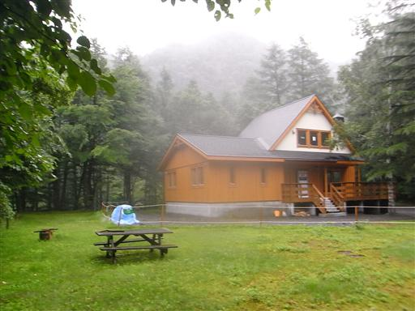
大井川に架かる吊橋。ここを渡って登山道に入っていく。
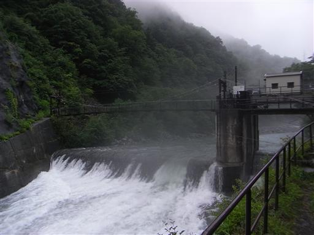
道端にキリンソウが咲いている。派手な黄色でよく目立つ。

立派な吊橋だが、下の川の水量が多く流れも極めて速いので、結構怖い。
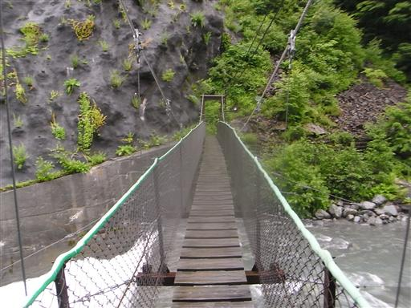
川は激流となって流れ落ちていく。
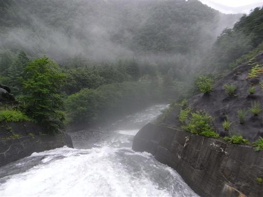
天気予報によると、今日明日と天気が回復する予報だったのだが、
空はどんよりとしていて、小雨模様だ。
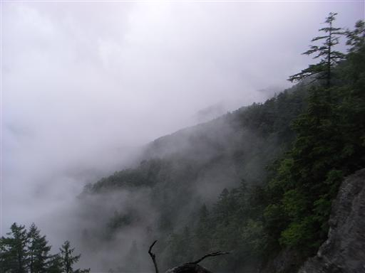
樹林帯の中に入っていく。しばらくはこの景色の中を登っていく。
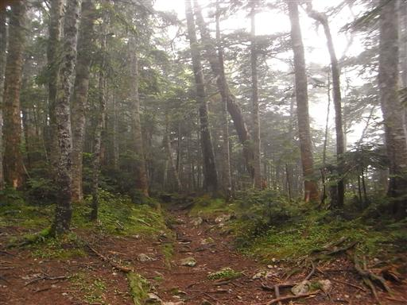
万斧沢ノ頭に到着。あまりピークという感じではなく、展望も開けない。
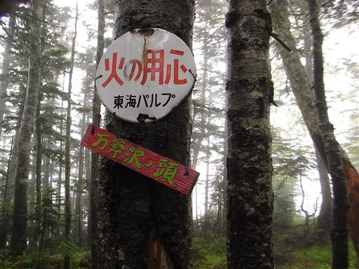
標高を上げて行くと森林限界を超える。途端に風雨が強くなる。
晴れの日の森林限界上は楽しいが、雨の日は逆に辛い。
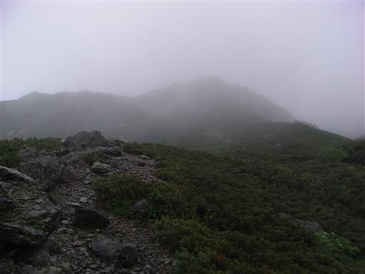
東海フォレストの案内板。
二軒小屋ロッヂに行くためには、宿泊するか1日かけて歩くしかない。
南ア南部のテント泊縦走者は、山に登る前に
東海フォレストの嫌がらせに対して戦わなければならない。
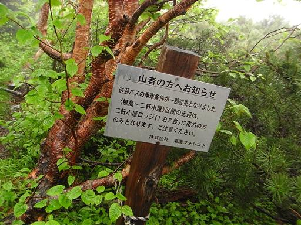
キバナノコマノツメ。スミレの一種。
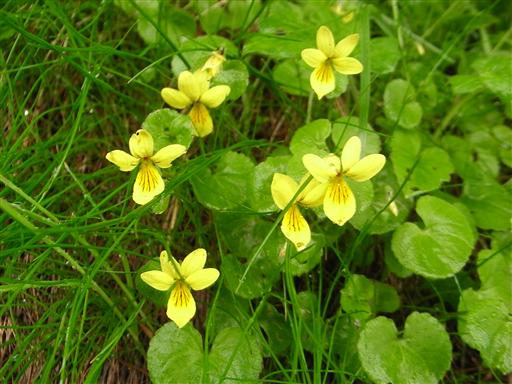
オオヒョウタンボク。
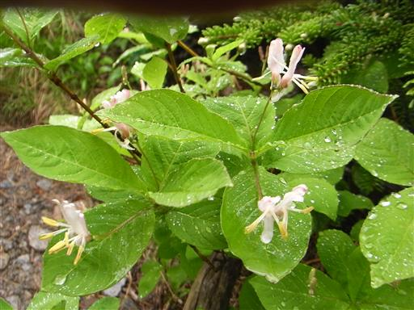
10:59 千枚岳山頂到着。標高2880m。
驚いたことに山頂には先行者がいる。
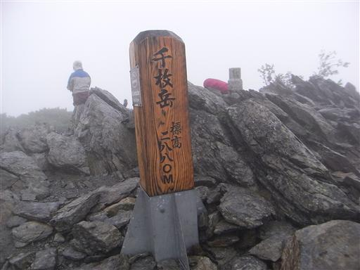
展望が良さそうな山頂だが、視界は真っ白。
この近くに千枚小屋があったのだが、今年の6月に焼失してしまったらしい。
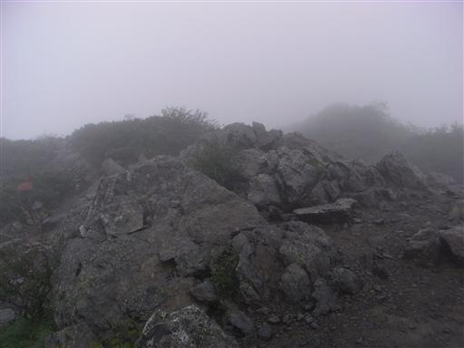
山頂直下に咲くイワベンケイ。
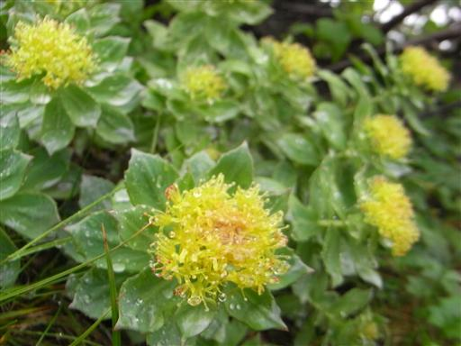
ミヤマオダマキ。代表的な高山植物だ。

ミヤマムラサキ。花は非常に小さい。
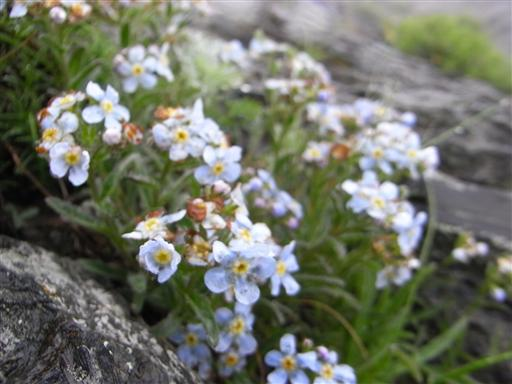
ミヤマシオガマ。登山道のあちこちに咲いていて、赤いので良く目立つ。
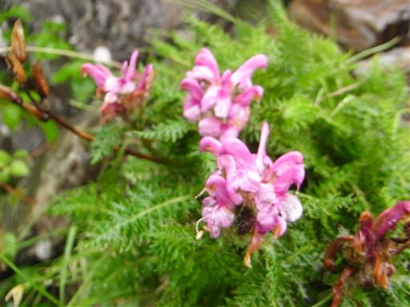
タカネヤハズハハコ。
ピンク色の玉をいくつも付ける変わった形の植物。
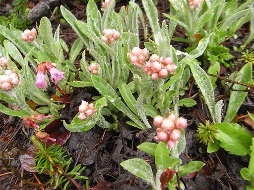
アオノツガザクラ。地味だが良く見かける花だ。
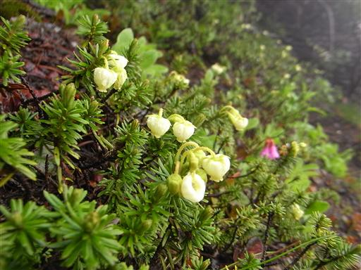
ミネズオウ。星型の小さな花をたくさん咲かせる。
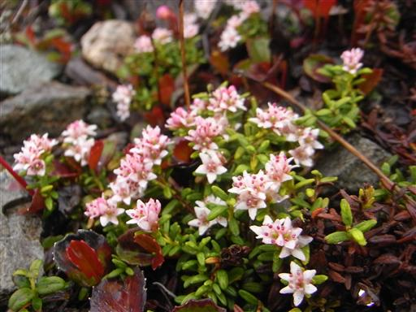
岩がごろごろした斜面を登っていく。
花の種類は豊富だが、他に見るべきものはない。
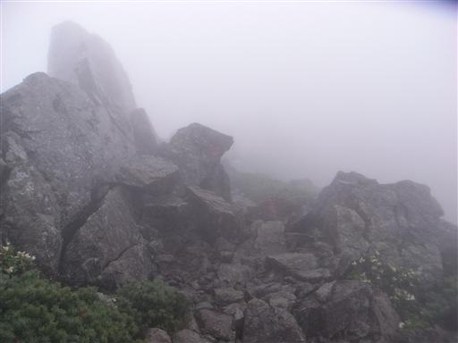
12:23 荒川東岳山頂到着。標高3141m。
荒川三山の最高峰で別名悪沢岳。
槍ヶ岳に次ぐ本邦第6位の高峰だ。
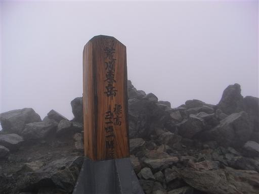
オヤマノエンドウ。マメ科の植物。
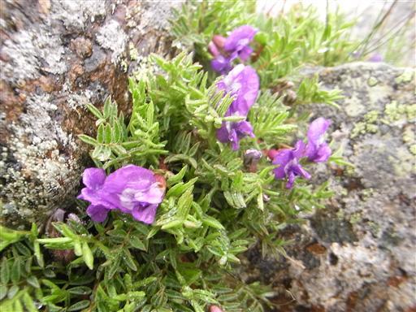
シロウマナズナ。風雨に晒されてだらっとしている。
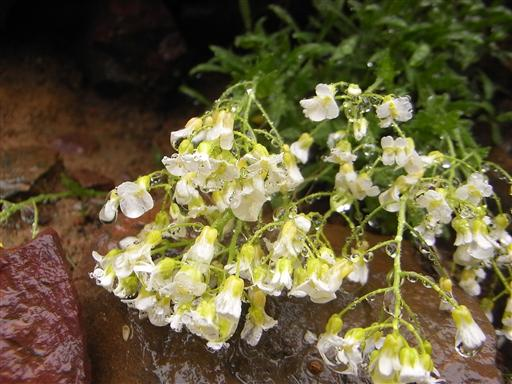
ハクサンイチゲ。高山植物の代表格で、大群落をつくる。
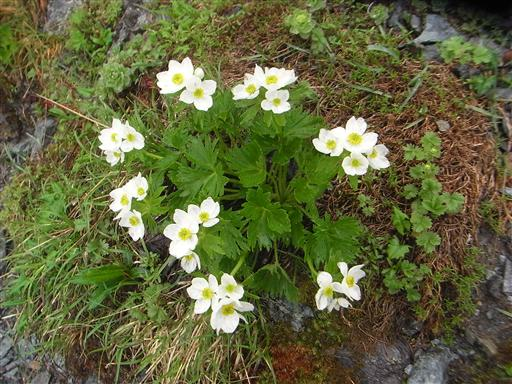
ツガザクラ。ピンク色の可愛らしい花を咲かせる。
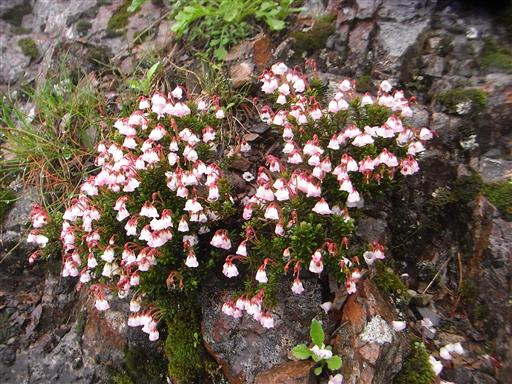
中岳避難小屋に到着する。
まだ13時だというのに中には数名の登山者が休んでいる。
この天気ではこれ以上行動する気になれないのだろう。
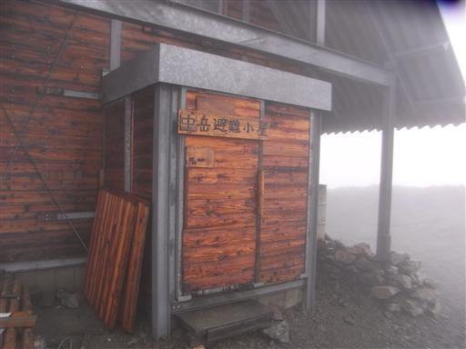
13:18 荒川中岳山頂到着。標高3083m。
避難小屋のすぐ側にあるピークだ。
明日の好天を信じて、予定通り荒川小屋に向かう。
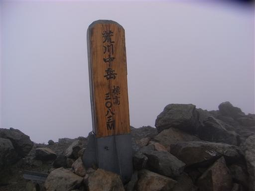
暴風雨の稜線。荒川前岳はルートを外れて往復しなければならない。
この天気では行く価値0だが、たかだか片道5分の道のり。
荒川三山制覇のために行くことにする。
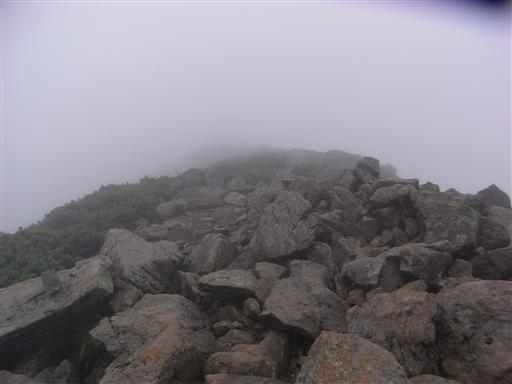
13:27 荒川前岳山頂到着。標高3068m。
とりあえずこれで荒川三山は制覇だ。写真を撮ってさっさと引き返す。
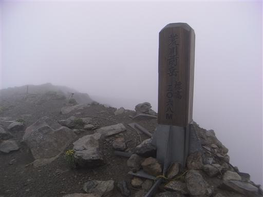
登山道が稜線を外れると、風下側なので風がぴたっと止む。
そして斜面にはハクサンイチゲとシナノキンバイのお花畑がどこまでも広がっている。
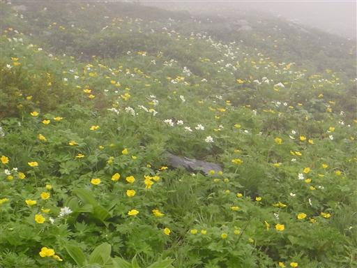
シナノキンバイ。比較的大きな花で、ハクサンイチゲと咲き競う姿は夏山の代表的な景観だ。
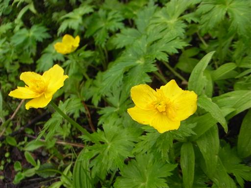
14:19 荒川小屋到着。標高2610m。
雨は止んだのでテントを張ることにする。小屋の中は登山者であふれている。
こんな絶望的な天気の中でも、おばちゃん達は楽しそうに騒いでいる…
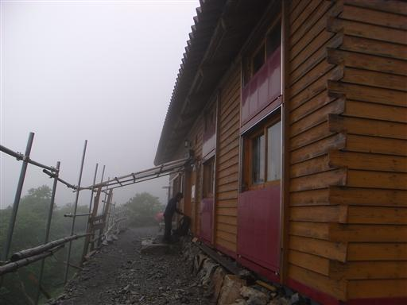